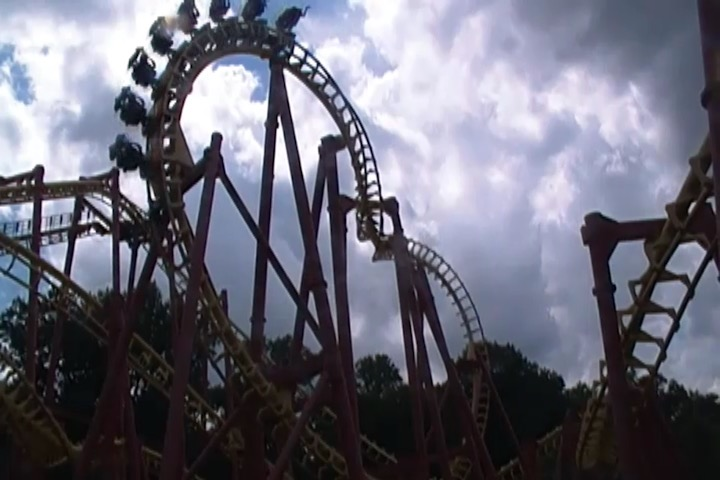

| |
Professor Screamore's Skywinder Review

We're here at Six Flags America to ride your typical SLC. After climbing in the seat and pulling down the shoulder harness, you dispatch. Up the lift you go. Once you reach the top, it's all downhill from there. You curve and away and down you go! There isn't that much pain in the first drop. Once you reach the bottom of the first drop, it's all fast. Then you soar up in the sea serpent roll. You expect it to hurt after riding other SLCs, but to our suprise, there's no pain! Ok, I wouldn't say no pain, but it's all very mild. This is tolerable headbanging. While it's not glass smooth, it's all right. Then after flipping upsidedown a second time, you head back down and head straight for the overbanked turn. That is actually fun and you even get a wee bit of airtime. Then you head for the sidewinder. Now there is unfortunetly a smack to the head right here. But hey, at least this is where the pain ends. Then you turn around and head straight for two inline twists. The Inline Twists are very fun as they just whip you upsidedown. Then there's not that much. You go through a small hill, around a turn, and down another slight hill, only to glide into the brake run. Of all the SLCs I've been on, Mind Eraser is definetly one of the better ones. I wouldn't really tell you to go out and make this mandatory when there are much better coasters in the park. But if you're into credit whoring or just love SLCs, this is definetly one of the better ones to ride.
6/10
Location: Six Flags America
Opened: 1995
Built by: Vekoma
Last Ridden: July 22, 2019
I have ridden this exact same ride at the following parks.
Canada's Wonderland
Elitch Gardens
Geauga Lake
Heide Park
Kentucky Kingdom
La Ronde
Michigan's Adventure
Movie Park Germany
Six Flags Discovery Kingdom
Six Flags Mexico
Six Flags New England
Professor Screamore's Skywinder Photos


Home
|